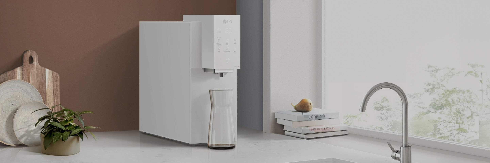
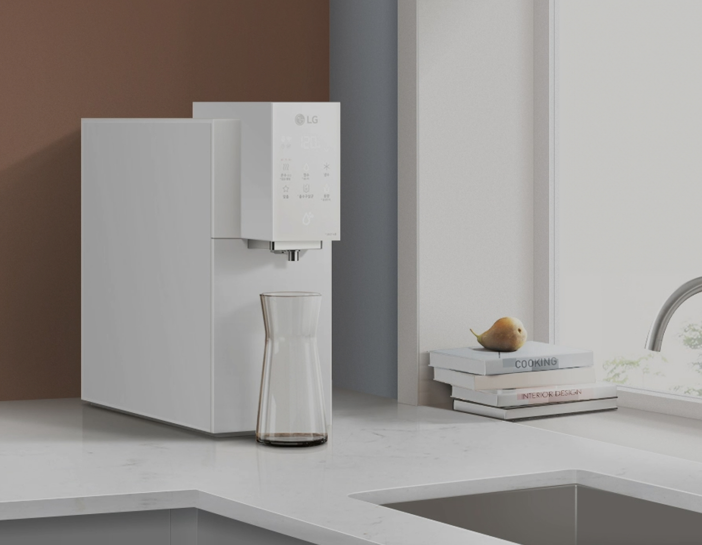
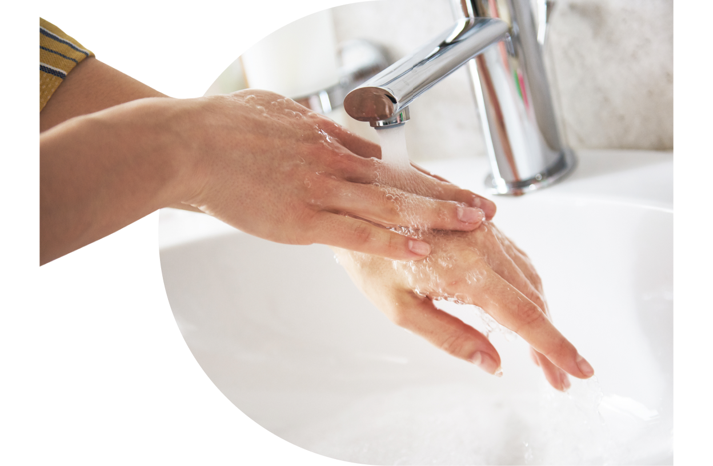
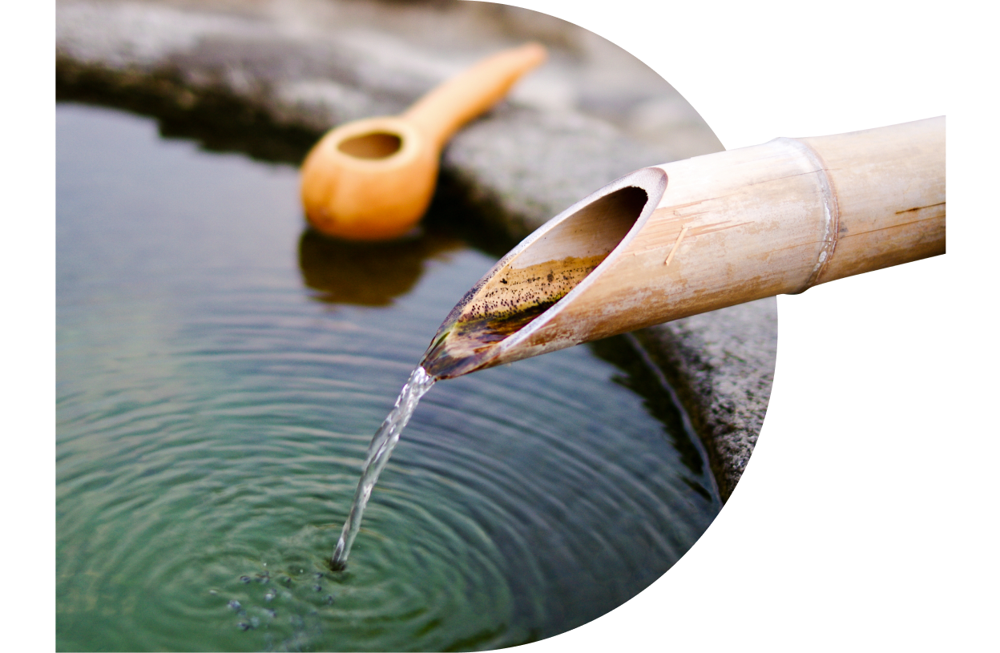
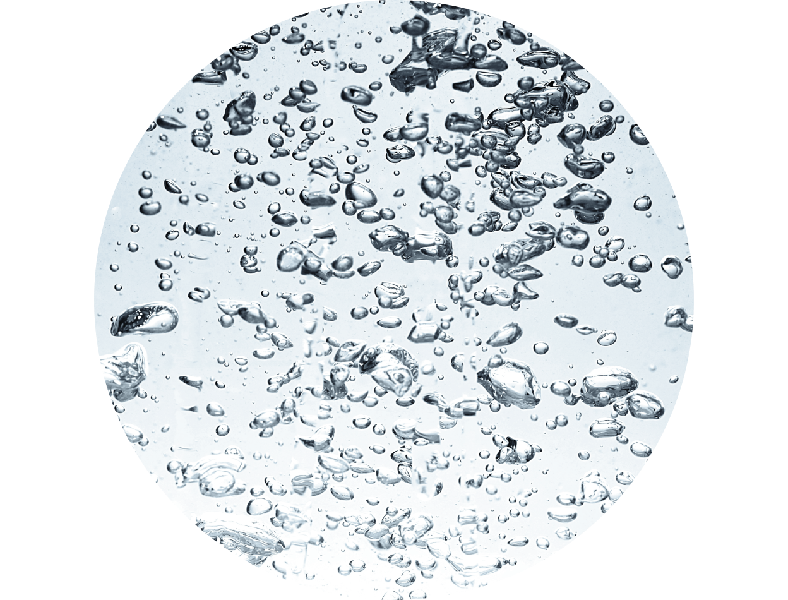
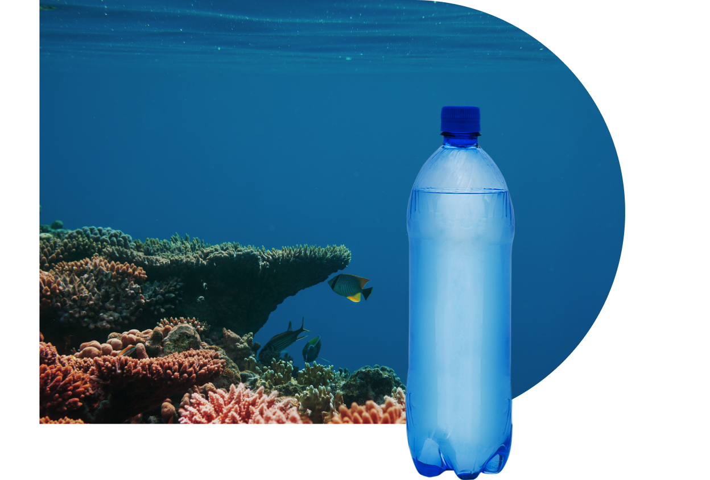
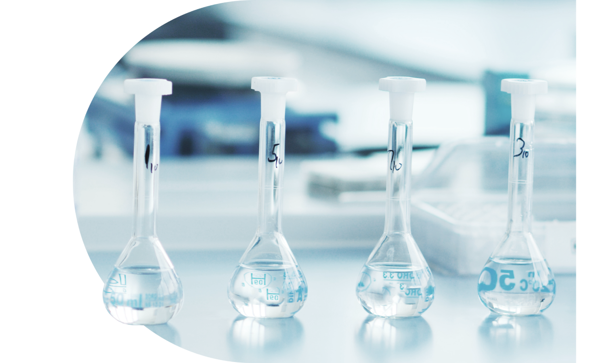
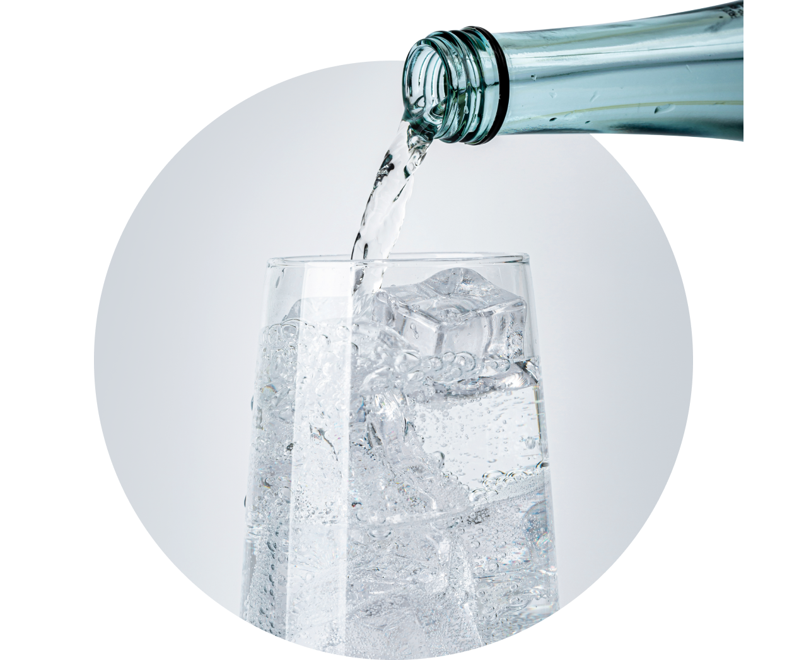

주방정수기


보다 더 스마트한 일상
LG ThinQ의 시작

보다 더 스마트한 일상, LG ThinQ
씽큐는 사람과 가전을 AI 기술로 연결하여 더 편리하고 놀라운 일상을 만드는 LG전자의 스마트 홈 플랫폼입니다.
* 본 콘텐츠는 ThinQ 앱의 콘텐츠입니다.
마시는 물은 모두 다 같을까요?
물에도 다양한 종류가 있어요.
물은 어떤 종류가 있는지 알아볼까요?
경도에 따른 구분
물에도 경도가 있다는 것 알고 계셨나요?
경도는 물의 세기를 말해요. 물에 들어있는 칼슘과 마그네슘의 양을 탄산칼슘으로 환산해서 120mg/L를 기준으로 '연수'과 '경수'로 나눌 수 있어요.
연수
연수는 경도가 낮은 물로 증류수, 빗물, 수돗물같이 물의 세기가 낮아 물 맛이 깔끔하고, 비누나 세제가 잘 풀리는 물이에요.

경수
경수는 미네랄의 농도가 높은 센물로 지하수나 우물물 등 맛이 텁텁하고 비누나 세제가 잘 안 풀려서 세척도 잘되지 않지요.
끓이면 미네랄 결정이 석출되기도 하고, 다량 섭취하면 배탈이나 설사의 위험이 있으니 주의해야 해요.

함유 물질에 따른 구분
물에 들어있는 함유 물질에 따라 광천수, 해양심층수, 증류수, 탄산수 등으로 구분해요.
광천수
광천수는 땅속에서 솟아 나오는 물을 말하는데 칼슘이나 마그네슘 등의 미네랄이 많이 포함돼 ‘미네랄수’라고도 해요
시중에서 판매되는 대부분의 생수가 광천수인데 칼슘, 마그네슘 등의 7가지 필수 미네랄 성분 외에 실리카, 셀레늄 등 다양한 물질이 포함되어 있어요.

해양심층수
태양광이 도달하지 않는 수심 200m 이상의 깊은 바닷물로, 오염물질이 없어 순수한 물 상태를 유지하고 있죠
오랜 기간 동안 질소나 규소 같은 무기염류를 함유하고 있어 식용, 식품, 화장품 등의 다양한 분야에 활용되고 있어요.

증류수
물을 끓여서 발생하는 수증기를 냉각시켜서 정제한 물로, 각종 무기물과 유기물이 없는 순수한 물을 ‘증류수’라고 하죠
주로 연구실에서 연구용으로 사용되고, 여러 번 증류를 거치므로 1차, 2차, 3차 증류수로 구분하기도 해요.

탄산수
탄산수는 적당한 염류를 함유한 음료에 탄산 가스를 녹여 만드는데, 톡 쏘는 청량감에 미네랄이 풍부하게 들어있어서 인기가 많죠.
이산화탄소가 함유된 탄산수는 입속 점막을 자극해 침을 발생시켜서 소화효소를 통해 장 운동을 활발하게 해 주기도 해요.

매일 마시는 흔한 물이지만 종류가 다양한 만큼 알고 마시면
건강한 생활에 많은 도움이 될 거예요!


LG ThinQ
ThinQ 하나로 더 좋아지는 일상
일상을 더 편하고 스마트하게 만들어주는 씽큐 앱을 지금 바로 만나보세요.
- #정수기
- #건강꿀팁
- #연수
- #물종류
- #다양한종류
- #경수
- #광천수
- #해양심층수
- #증류수
- #탄산수
출처 및 고지사항